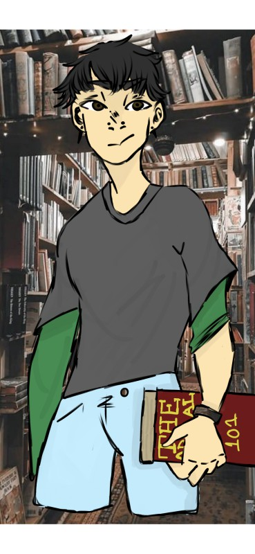
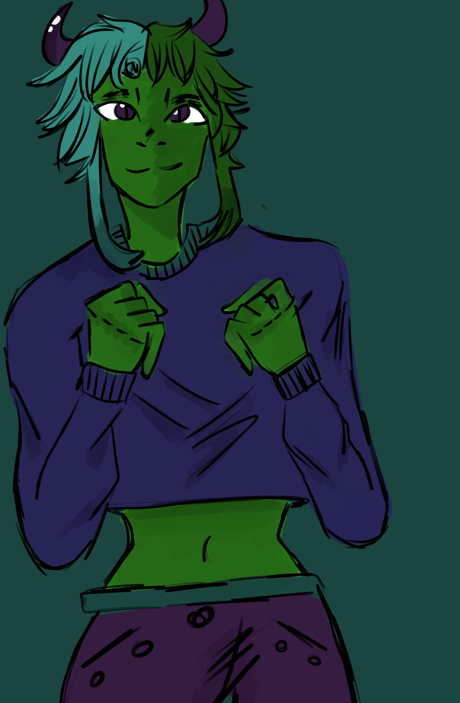
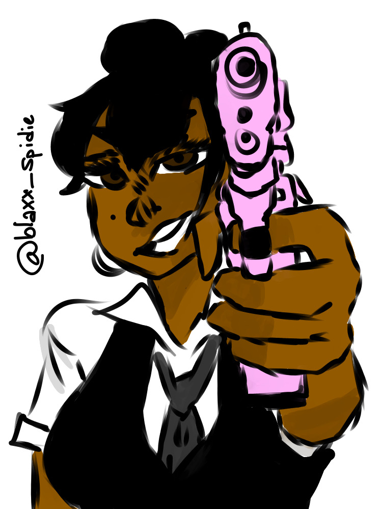
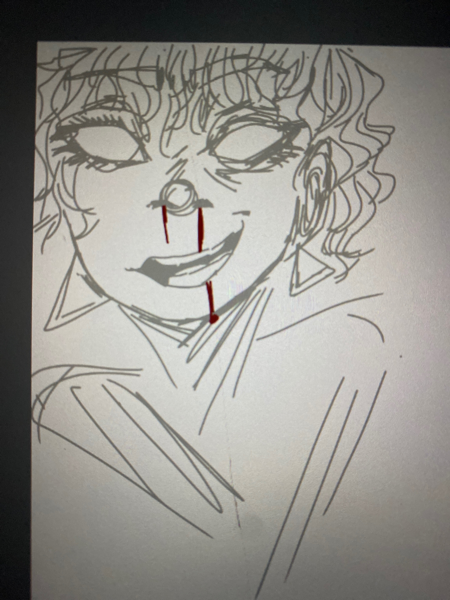
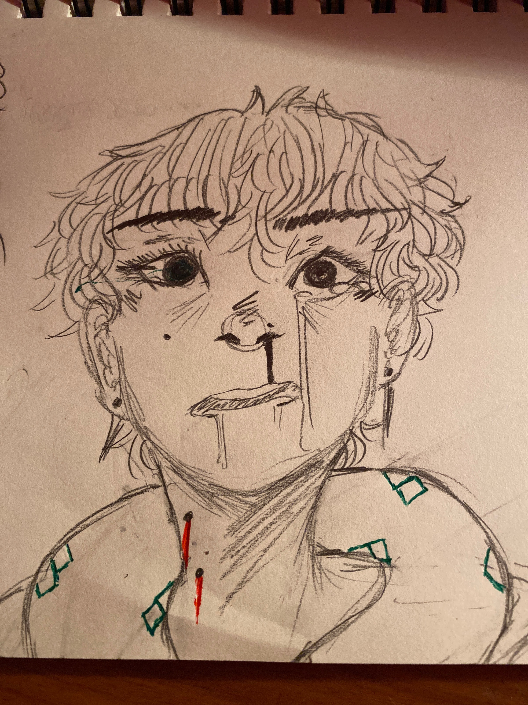
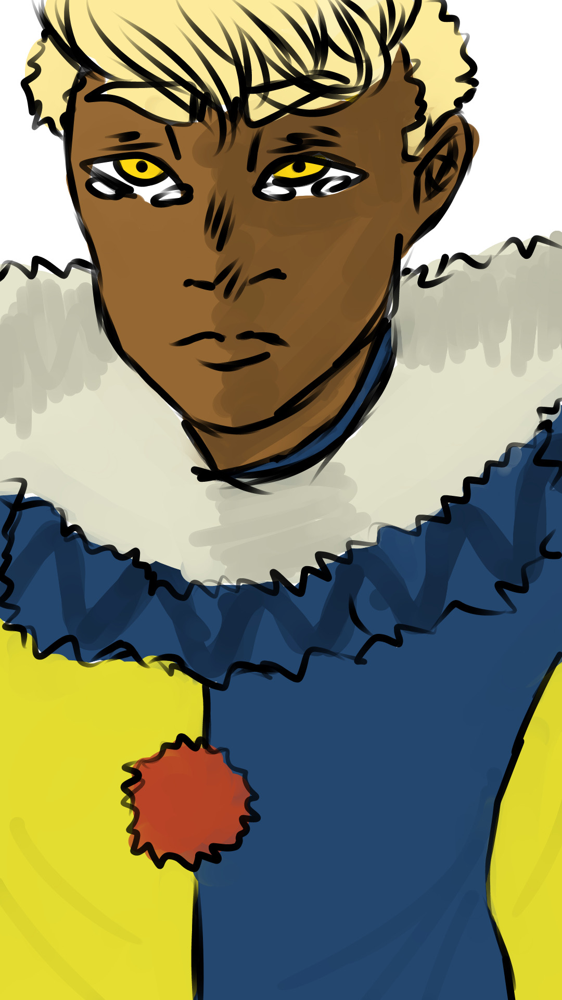

Look at Things I've Done Over the Years.
Home
About Me
Contact

This was the first time I explored actually using a photograph online as a background instead leaving it blank or trying to draw one and envitably leaving this artwork alone.

This is a work I did trying to explore different colors and palettes. It give me this vibe of Beast Boy from Teen Titans.

I was trying to practice drawing perspective. It's a little violent in honesty lol. But its based off an idea I had if a female mafia boss, hence the gun.
I was trying to improve my art style and I liked the way this came out. I decided I'd also use piece of art as a way to improve on my shading, too.

I wanted to take this newly, improved art style digitally. I decided that I'd make a quick sketch the day before I had an AP test since I still had inspiration (lol) and I liked how this came out a bit.

I was trying to continue that improvement to my art style but I wanted to use minimal color as possible to see how it'd turn out. The lighting however makes it hard to see the green.

Since I'm an avid Sim player, I wanted to use my Sims for inspiration on ideas to draw.